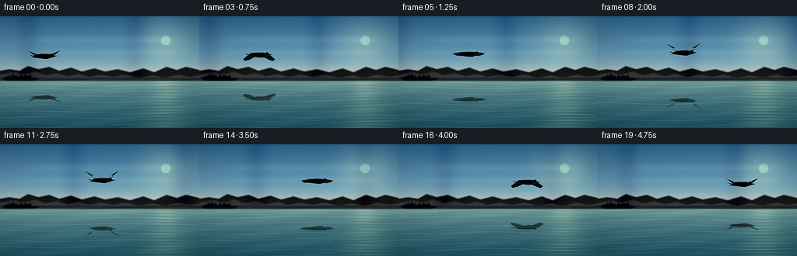
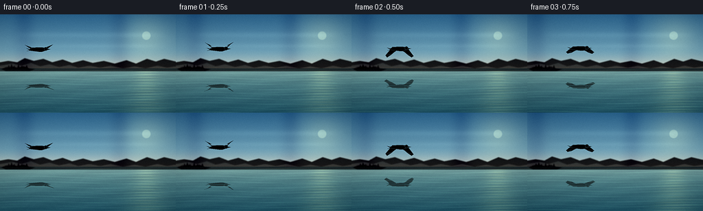
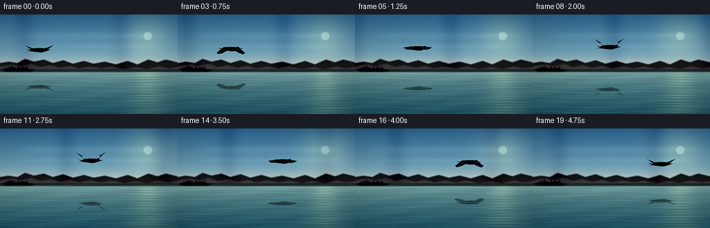
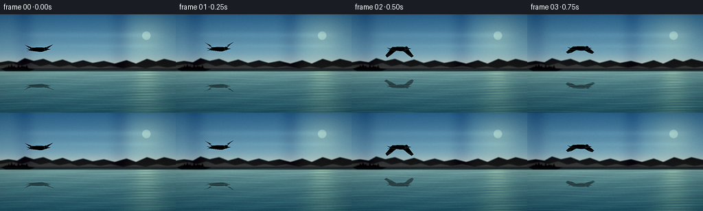

CODING AGENTS AS PIXEL WORLD MODELS
traex/DeepSeek-V4.1-Flash · phygen_056
点击播放 · 原生 RGB 像素
逐轮保存的候选
回放视频、检查图与代码变化。
每份候选均可单独播放。实际图片检查记录在下方工具轨迹中。
候选 01播放与检查图
点击播放 · 原生 RGB 像素


展开代码变化
--- 上一保存版本
+++ 本次保存版本
@@ -0,0 +1,276 @@
+from pathlib import Path
+
+import numpy as np
+from PIL import Image, ImageDraw, ImageFilter
+
+import artifact_io
+
+
+W, H = 256, 144
+FPS = 4
+N_FRAMES = 20
+SS = 3
+WX, HX = W * SS, H * SS
+HORIZON = 79
+
+
+def lerp(a, b, amount):
+ return a + (b - a) * amount
+
+
+def composite(base, layer):
+ """Alpha-composite an RGBA PIL layer over an RGB float image."""
+ rgba = np.asarray(layer, dtype=np.float32) / 255.0
+ alpha = rgba[:, :, 3:4]
+ return base * (1.0 - alpha) + rgba[:, :, :3] * alpha
+
+
+def sky_and_water(time_s):
+ yy, xx = np.mgrid[0:HX, 0:WX].astype(np.float32)
+ out = np.empty((HX, WX, 3), dtype=np.float32)
+ horizon = HORIZON * SS
+
+ sky_t = np.clip(yy / horizon, 0.0, 1.0)
+ top = np.array([50.0, 111.0, 151.0], dtype=np.float32)
+ middle = np.array([117.0, 169.0, 188.0], dtype=np.float32)
+ haze = np.array([220.0, 223.0, 202.0], dtype=np.float32)
+ low_mix = np.clip(sky_t / 0.68, 0.0, 1.0)[..., None]
+ sky = lerp(top, middle, low_mix)
+ high_mix = np.clip((sky_t - 0.66) / 0.34, 0.0, 1.0)[..., None]
+ sky = lerp(sky, haze, high_mix ** 1.4)
+
+ # A small, bright sun and a broad atmospheric glow.
+ sun_x, sun_y = 213.0 * SS, 31.0 * SS
+ dist2 = (xx - sun_x) ** 2 + (yy - sun_y) ** 2
+ glow = np.exp(-dist2 / (34.0 * SS) ** 2)
+ disk = np.clip((7.0 * SS - np.sqrt(dist2)) / (1.6 * SS), 0.0, 1.0)
+ sky += glow[..., None] * np.array([43.0, 36.0, 16.0], dtype=np.float32)
+ sky += disk[..., None] * np.array([38.0, 35.0, 22.0], dtype=np.float32)
+
+ # Long, quiet cloud wisps add depth without making the sky overcast.
+ wisp_a = np.exp(-((yy - 30.0 * SS) / (4.2 * SS)) ** 2)
+ wisp_b = np.exp(-((yy - 46.0 * SS) / (3.0 * SS)) ** 2)
+ modulation = (
+ 0.52
+ + 0.25 * np.sin(xx * 0.010 + yy * 0.017)
+ + 0.16 * np.sin(xx * 0.021 - yy * 0.011 + 1.7)
+ )
+ wisps = (wisp_a * (0.48 + 0.42 * modulation) + wisp_b * (0.25 + 0.28 * modulation))
+ wisps *= np.clip((xx - 18 * SS) / (40 * SS), 0.0, 1.0)
+ wisps *= np.clip((WX - 8 * SS - xx) / (45 * SS), 0.0, 1.0)
+ sky += wisps[..., None] * np.array([16.0, 17.0, 14.0], dtype=np.float32)
+ out[:horizon] = sky[:horizon]
+
+ water_t = np.clip((yy - horizon) / max(1, HX - horizon), 0.0, 1.0)
+ near = np.array([113.0, 157.0, 156.0], dtype=np.float32)
+ deep = np.array([28.0, 80.0, 98.0], dtype=np.float32)
+ water = lerp(near, deep, water_t[..., None] ** 0.72)
+
+ # Sky color pooling near the far shore.
+ shore_glow = np.exp(-((yy - horizon) / (13.0 * SS)) ** 2)
+ water = lerp(water, np.array([137.0, 174.0, 170.0]), shore_glow[..., None] * 0.33)
+
+ # A broken column of sunlight reaches across the calm lake.
+ dy = np.maximum(yy - horizon, 0.0) / SS
+ column_width = 10.0 + 0.18 * dy
+ column = np.exp(-0.5 * ((xx / SS - 213.0) / column_width) ** 2)
+ shimmer = 0.45 + 0.55 * (0.5 + 0.5 * np.sin(dy * 1.55 + time_s * 3.1))
+ column *= np.clip((yy - horizon) / (4.0 * SS), 0.0, 1.0)
+ water += (column * shimmer)[..., None] * np.array([37.0, 34.0, 18.0], dtype=np.float32)
+
+ # Fine wavelets: two crossing envelopes produce irregular, natural crests.
+ phase_a = yy * 0.50 + 1.7 * np.sin(xx * 0.013 + time_s * 0.72) + time_s * 1.55
+ phase_b = yy * 1.08 - 1.1 * np.sin(xx * 0.027 - time_s * 0.48) - time_s * 0.85
+ crest_a = np.maximum(0.0, np.sin(phase_a)) ** 18
+ crest_b = np.maximum(0.0, np.sin(phase_b)) ** 26
+ depth_fade = np.clip((yy - horizon) / (7.0 * SS), 0.0, 1.0)
+ water += ((0.62 * crest_a + 0.38 * crest_b) * depth_fade)[..., None] * np.array(
+ [17.0, 23.0, 18.0], dtype=np.float32
+ )
+
+ broad = 0.5 + 0.5 * np.sin(xx * 0.018 + yy * 0.11 + time_s * 0.9)
+ water += (broad - 0.5)[..., None] * np.array([5.0, 7.0, 6.0], dtype=np.float32)
+ out[horizon:] = water[horizon:]
+ return np.clip(out, 0.0, 255.0)
+
+
+def mountain_layers():
+ layer = Image.new("RGBA", (WX, HX), (0, 0, 0, 0))
+ draw = ImageDraw.Draw(layer)
+
+ far = [
+ (0, 70), (12, 68), (25, 70), (36, 64), (49, 68), (63, 65),
+ (76, 70), (91, 66), (105, 71), (121, 67), (135, 71), (151, 68),
+ (167, 72), (184, 67), (198, 72), (214, 65), (227, 69), (239, 65),
+ (256, 69), (256, 82), (0, 82),
+ ]
+ draw.polygon([(x * SS, y * SS) for x, y in far], fill=(91, 126, 132, 218))
+
+ middle = [
+ (0, 75), (18, 72), (31, 75), (45, 71), (58, 76), (72, 73),
+ (86, 77), (101, 74), (114, 78), (130, 75), (146, 78), (161, 75),
+ (179, 79), (196, 76), (212, 79), (229, 75), (243, 78), (256, 76),
+ (256, 83), (0, 83),
+ ]
+ draw.polygon([(x * SS, y * SS) for x, y in middle], fill=(64, 103, 108, 178))
+
+ # A small wooded island anchors the left side and leaves most of the lake open.
+ island = [(2, 80), (9, 77), (18, 76), (25, 78), (34, 76), (42, 79), (51, 80), (43, 83), (8, 83)]
+ draw.polygon([(x * SS, y * SS) for x, y in island], fill=(49, 84, 83, 235))
+ for x, top, height in [(11, 74, 5), (15, 72, 7), (19, 75, 4), (25, 73, 6), (30, 75, 4), (37, 74, 5)]:
+ draw.polygon(
+ [(x * SS, (top + height) * SS), ((x + 1.7) * SS, top * SS), ((x + 3.4) * SS, (top + height) * SS)],
+ fill=(38, 72, 72, 240),
+ )
+
+ layer = layer.filter(ImageFilter.GaussianBlur(0.65 * SS))
+ return layer
+
+
+def draw_bird_icon(wing_y):
+ icon = Image.new("RGBA", (72 * SS, 58 * SS), (0, 0, 0, 0))
+ d = ImageDraw.Draw(icon)
+ cx, cy = 36 * SS, 28 * SS
+
+ def point(x, y):
+ return (cx + x * SS, cy + y * SS)
+
+ def poly(points, fill, outline=None, width=1):
+ d.polygon([point(x, y) for x, y in points], fill=fill, outline=outline, width=max(1, width * SS))
+
+ outline = (49, 67, 71, 205)
+ far_wing = [
+ (0, -1), (-4, -3), (-10, -2.5), (-20, wing_y * 0.92),
+ (-17.5, wing_y + 2.0), (-12.0, wing_y * 0.57 + 3.0),
+ (-7.0, wing_y * 0.24 + 2.4), (-1.5, 1.4),
+ ]
+ near_wing = [
+ (1, -1), (5, -3), (11, -2.5), (21, wing_y),
+ (18.0, wing_y + 2.2), (13.0, wing_y * 0.58 + 3.1),
+ (8.0, wing_y * 0.25 + 2.5), (2.0, 1.5),
+ ]
+ poly(far_wing, (213, 219, 208, 255), outline, 1)
+ poly(near_wing, (242, 239, 222, 255), outline, 1)
+
+ # Slate wingtips make the bird readable against both sky and water.
+ poly([(-11, wing_y * 0.58 + 0.8), (-20, wing_y * 0.92), (-17.5, wing_y + 2),
+ (-14.1, wing_y * 0.72 + 2.5)], (46, 63, 68, 255), outline, 1)
+ poly([(12.2, wing_y * 0.61 + 0.8), (21, wing_y), (18, wing_y + 2.2),
+ (14.8, wing_y * 0.73 + 2.6)], (43, 60, 65, 255), outline, 1)
+
+ # A slim body, forked tail, and pale head.
+ body = [
+ (-13, -0.5), (-9, -2.2), (-2, -3.3), (6, -3.0), (10.5, -1.7),
+ (12.3, 0.0), (10.5, 1.9), (5.5, 3.4), (0, 3.5), (-5.5, 2.7), (-13.5, 1.7),
+ ]
+ poly(body, (239, 235, 218, 255), outline, 1)
+ poly([(-13.4, -0.5), (-17.5, -1.6), (-13.0, 1.1), (-17.0, 2.5), (-12.5, 1.9)],
+ (219, 221, 207, 255), outline, 1)
+ poly([(2, 1.1), (7.5, 2.6), (4, 3.2), (0, 3.0)], (172, 184, 177, 245))
+
+ d.ellipse(
+ [cx + 8.0 * SS, cy - 3.3 * SS, cx + 13.2 * SS, cy + 1.8 * SS],
+ fill=(244, 239, 220, 255), outline=outline, width=max(1, SS),
+ )
+ poly([(12.2, -1.3), (17.4, -0.1), (12.4, 1.3)], (199, 130, 67, 255), outline, 1)
+ eye_r = 0.9 * SS
+ d.ellipse([cx + 10.2 * SS - eye_r, cy - 1.6 * SS - eye_r,
+ cx + 10.2 * SS + eye_r, cy - 1.6 * SS + eye_r], fill=(35, 47, 50, 255))
+ return icon
+
+
+def reflected_bird(icon, center_x, center_y, time_s):
+ reflected = icon.transpose(Image.Transpose.FLIP_TOP_BOTTOM)
+ rgba = np.asarray(reflected, dtype=np.float32).copy()
+ alpha = rgba[:, :, 3:4] / 255.0
+ water_tint = np.array([52.0, 101.0, 111.0], dtype=np.float32)
+ rgba[:, :, :3] = rgba[:, :, :3] * 0.36 + water_tint * 0.64
+ rgba[:, :, 3] = np.clip(alpha * 168.0, 0.0, 255.0)[..., 0]
+ reflected = Image.fromarray(np.clip(rgba, 0, 255).astype(np.uint8), "RGBA")
+ reflected = reflected.resize((int(reflected.width * 1.05), int(reflected.height * 0.82)), Image.Resampling.LANCZOS)
+
+ canvas = Image.new("RGBA", (WX, HX), (0, 0, 0, 0))
+ left = int(center_x - reflected.width / 2)
+ top = int(center_y - reflected.height / 2)
+ canvas.alpha_composite(reflected, (left, top))
+ arr = np.asarray(canvas).copy()
+
+ # Ripple the reflected silhouette by shifting horizontal scanlines.
+ warped = np.zeros_like(arr)
+ for y in range(HORIZON * SS, HX):
+ depth = (y / SS - HORIZON)
+ shift = int(round((1.4 + 0.035 * depth) * np.sin(y * 0.27 + time_s * 2.8)))
+ if shift > 0:
+ warped[y, shift:, :] = arr[y, :-shift, :]
+ elif shift < 0:
+ warped[y, :shift, :] = arr[y, -shift:, :]
+ else:
+ warped[y] = arr[y]
+ broken = 0.74 + 0.26 * (0.5 + 0.5 * np.sin(np.arange(HX)[:, None] * 0.73 + time_s * 4.0))
+ warped[:, :, 3] = np.clip(warped[:, :, 3].astype(np.float32) * broken, 0.0, 255.0)
+ return Image.fromarray(warped.astype(np.uint8), "RGBA")
+
+
+def render_frame(index):
+ time_s = index / FPS
+ image = sky_and_water(time_s)
+ image = composite(image, mountain_layers())
+
+ # Dark, soft far-shore reflection just below the waterline.
+ yy = np.arange(HX, dtype=np.float32)[:, None]
+ xx = np.arange(WX, dtype=np.float32)[None, :]
+ h = HORIZON * SS
+ below = np.clip(yy - h, 0.0, None)
+ shore_reflect = np.exp(-below / (6.5 * SS)) * np.clip((h + 5 * SS - yy) / (1.0 * SS), 0.0, 1.0)
+ bands = 0.38 + 0.62 * np.maximum(0.0, np.sin(below * 0.52 + xx * 0.015 + time_s * 1.3)) ** 5
+ image -= (shore_reflect * bands)[..., None] * np.array([21.0, 26.0, 18.0], dtype=np.float32)
+
+ path_t = index / (N_FRAMES - 1)
+ bird_x = lerp(56.0, 185.0, path_t)
+ bird_y = 52.5 - 4.7 * np.sin(np.pi * path_t) + 0.7 * np.sin(2 * np.pi * path_t)
+ wing_phase = 2 * np.pi * 1.12 * time_s + 0.55
+ wing_y = -13.5 * np.sin(wing_phase)
+ icon = draw_bird_icon(wing_y)
+
+ # Reflection sits below the horizon, compressed as it recedes into the lake.
+ reflection_center_y = HORIZON + (HORIZON - bird_y) * 0.87 + 2.0
+ reflection = reflected_bird(icon, bird_x * SS, reflection_center_y * SS, time_s)
+ image = composite(image, reflection)
+
+ # Crisp foreground wavelets cross the reflection and make it feel embedded in water.
+ water_y = np.maximum(yy - h, 0.0) / SS
+ phase = water_y * 0.88 + 1.3 * np.sin(xx / SS * 0.028 + time_s * 1.1) + time_s * 2.1
+ sparkle = np.maximum(0.0, np.sin(phase)) ** 30
+ sparkle *= np.clip((yy - h) / (3.0 * SS), 0.0, 1.0)
+ image += sparkle[..., None] * np.array([15.0, 19.0, 15.0], dtype=np.float32)
+
+ bird_layer = Image.new("RGBA", (WX, HX), (0, 0, 0, 0))
+ bird_layer.alpha_composite(icon, (int(bird_x * SS - icon.width / 2), int(bird_y * SS - icon.height / 2)))
+ image = composite(image, bird_layer)
+
+ # Gentle luminance falloff at the corners keeps attention on the crossing bird.
+ nx = (xx / WX - 0.5) * 2.0
+ ny = (yy / HX - 0.5) * 2.0
+ vignette = np.clip(1.0 - 0.075 * (nx * nx + ny * ny), 0.0, 1.0)
+ image *= vignette[..., None]
+
+ frame = Image.fromarray(np.clip(image, 0, 255).astype(np.uint8), "RGB")
+ frame = frame.resize((W, H), Image.Resampling.LANCZOS)
+ frame = frame.filter(ImageFilter.UnsharpMask(radius=0.65, percent=72, threshold=2))
+
+ # Very light deterministic grain prevents smooth gradients from banding.
+ arr = np.asarray(frame, dtype=np.float32)
+ rng = np.random.default_rng(1000 + index)
+ grain = rng.normal(0.0, 1.05, (H, W, 1)).astype(np.float32)
+ arr += grain
+ return np.clip(np.rint(arr), 0, 255).astype(np.uint8)
+
+
+def main():
+ case_dir = Path(__file__).resolve().parent
+ frames = np.stack([render_frame(i) for i in range(N_FRAMES)])
+ artifact_io.save(frames, case_dir)
+
+
+if __name__ == "__main__":
+ main()
候选 02播放与检查图
点击播放 · 原生 RGB 像素


展开代码变化
--- 上一保存版本
+++ 本次保存版本
@@ -182,12 +182,17 @@
def reflected_bird(icon, center_x, center_y, time_s):
reflected = icon.transpose(Image.Transpose.FLIP_TOP_BOTTOM)
rgba = np.asarray(reflected, dtype=np.float32).copy()
- alpha = rgba[:, :, 3:4] / 255.0
- water_tint = np.array([52.0, 101.0, 111.0], dtype=np.float32)
- rgba[:, :, :3] = rgba[:, :, :3] * 0.36 + water_tint * 0.64
- rgba[:, :, 3] = np.clip(alpha * 168.0, 0.0, 255.0)[..., 0]
- reflected = Image.fromarray(np.clip(rgba, 0, 255).astype(np.uint8), "RGBA")
+ alpha = rgba[:, :, 3] / 255.0
+ water_tint = np.array([82.0, 132.0, 137.0], dtype=np.float32)
+ # Premultiply before resizing: transparent pixels carry no color into the edge.
+ rgba[:, :, :3] = (rgba[:, :, :3] * 0.48 + water_tint * 0.52) * alpha[..., None]
+ rgba[:, :, 3] = np.clip(alpha * 138.0, 0.0, 255.0)
+ reflected = Image.fromarray(np.clip(rgba, 0, 255).astype(np.uint8))
reflected = reflected.resize((int(reflected.width * 1.05), int(reflected.height * 0.82)), Image.Resampling.LANCZOS)
+ rgba = np.asarray(reflected, dtype=np.float32)
+ alpha = np.maximum(rgba[:, :, 3], 1.0)[..., None] / 255.0
+ rgba[:, :, :3] = np.clip(rgba[:, :, :3] / alpha, 0.0, 255.0)
+ reflected = Image.fromarray(np.clip(rgba, 0, 255).astype(np.uint8))
canvas = Image.new("RGBA", (WX, HX), (0, 0, 0, 0))
left = int(center_x - reflected.width / 2)
@@ -208,7 +213,7 @@
warped[y] = arr[y]
broken = 0.74 + 0.26 * (0.5 + 0.5 * np.sin(np.arange(HX)[:, None] * 0.73 + time_s * 4.0))
warped[:, :, 3] = np.clip(warped[:, :, 3].astype(np.float32) * broken, 0.0, 255.0)
- return Image.fromarray(warped.astype(np.uint8), "RGBA")
+ return Image.fromarray(warped.astype(np.uint8))
def render_frame(index):
@@ -254,7 +259,7 @@
vignette = np.clip(1.0 - 0.075 * (nx * nx + ny * ny), 0.0, 1.0)
image *= vignette[..., None]
- frame = Image.fromarray(np.clip(image, 0, 255).astype(np.uint8), "RGB")
+ frame = Image.fromarray(np.clip(image, 0, 255).astype(np.uint8))
frame = frame.resize((W, H), Image.Resampling.LANCZOS)
frame = frame.filter(ImageFilter.UnsharpMask(radius=0.65, percent=72, threshold=2))
可观测工具轨迹
实际执行的命令与返回图片。
命令 1exit 0
/bin/bash -c "pwd && rg --files -g 'prompt.txt' -g 'GENERATION_RULES.md' -g 'task_spec.json' -g '"'!*.mp4'"' -g '"'!*.mov'"'"
命令 2exit 0
/bin/bash -c "ls -la && find . -maxdepth 2 -type f -printf '%p\\n' | sort | head -200"
命令 3exit 0
/bin/bash -c 'cat prompt.txt'
命令 4exit 0
/bin/bash -c 'cat GENERATION_RULES.md'
命令 5exit 0
/bin/bash -c 'cat task_spec.json'
命令 6exit 0
/bin/bash -c "sed -n '1,260p' artifact_io.py && sed -n '1,220p' player_template.html"
命令 7exit 0
/bin/bash -c "python - <<'PY'
import sys
print(sys.version)
import numpy, PIL
print('numpy', numpy.__version__, 'PIL', PIL.__version__)
PY"命令 8exit 0
/bin/bash -c 'command -v chafa || true; command -v viu || true; command -v ffmpeg || true; command -v convert || true'
命令 9exit 0
/bin/bash -c 'python generate.py'
命令 10exit 0
/bin/bash -c "python - <<'PY'
from PIL import Image
import numpy as np
im=np.asarray(Image.open('frames/00.png').convert('RGB'),dtype=float)
g=im.mean(2)
chars=' .:-=+*#%@'
# average into 64x36 cells and map by luminance
for y in range(0,144,4):
row=''
for x in range(0,256,4):
v=g[y:y+4,x:x+4].mean()
row+=chars[min(len(chars)-1,int(v/256*len(chars)))]
print(row)
PY"命令 11exit 1
/bin/bash -c "python - <<'PY'
from PIL import Image
import numpy as np
for i in [0,5,10,15,19]:
a=np.asarray(Image.open(f'frames/{i:02d}.png')).astype(int)
mask=(a[:,:,0]>180)&(a[:,:,1]>175)&(a[:,:,2]>155)
ys,xs=np.where(mask)
print(i,'white bbox', (xs.min(),ys.min(),xs.max(),ys.max()), 'count',len(xs))
# motion stats
ims=[np.asarray(Image.open(f'frames/{i:02d}.png')).astype(float) for i in range(20)]
print('frame means', [round(x.mean(),1) for x in ims])
print('diffs', [round(np.abs(ims[i]-ims[i-1]).mean(),2) for i in range(1,20)])
PY"命令 12exit 0
/bin/bash -c "ls -lh pixels.npz inspection.png transition_check.png index.html frames/*.png | tail -25 && python - <<'PY' from PIL import Image for f in ['inspection.png','transition_check.png']: im=Image.open(f); print(f, im.size, im.mode) PY"
命令 13exit 0
/bin/bash -c "python - <<'PY'
from PIL import Image
import numpy as np
for i in [0,5,10,15,19]:
a=np.asarray(Image.open(f'frames/{i:02d}.png').convert('RGB')).astype(int)
# expected crop
x=int(56+(185-56)*i/19); y=int(52.5-4.7*np.sin(np.pi*i/19))
cr=a[max(0,y-20):y+20,max(0,x-35):x+35]
bright=cr.mean(2)
print(i,'pos',x,y,'crop max',cr.max(),'bright count>170',int((bright>170).sum()),'q',np.percentile(bright,[50,90,99,100]).round(1))
PY"命令 14exit 0
/bin/bash -c "python - <<'PY'
from PIL import Image
import numpy as np
ims=[np.asarray(Image.open(f'frames/{i:02d}.png').convert('RGB')).astype(float) for i in range(20)]
print('means', np.round([x.mean() for x in ims],1))
print('diffs', np.round([np.abs(ims[i]-ims[i-1]).mean() for i in range(1,20)],2))
# Unique colors and dynamic ranges
for i in [0,10,19]:
a=np.asarray(Image.open(f'frames/{i:02d}.png').convert('RGB'))
print(i,'rgb min/max',a.min((0,1)),a.max((0,1)),'unique',len(np.unique(a.reshape(-1,3),axis=0)))
# Check reflection region bird-like bright tint changes
for i in [0,10,19]:
a=ims[i]
x=56+(185-56)*i/19
y=79+(79-(52.5-4.7*np.sin(np.pi*i/19)))*.87+2
crop=a[int(y-16):int(y+16),int(x-22):int(x+22)]
print(i,'reflection bbox center',round(x),round(y),'mean',crop.mean(),'std',crop.std())
PY"命令 15exit 0
/bin/bash -c "python - <<'PY'
from PIL import Image
import numpy as np
im=Image.open('frames/00.png').convert('RGB')
# crop sky around bird and reflection, upscale nearest for visual diagnostics
im.crop((20,30,220,125)).resize((800,380), Image.Resampling.NEAREST).save('.tmp/detail.png')
# color block display coarse, 8 px blocks as ANSI truecolor
arr=np.asarray(im).astype(int)
for y in range(0,144,6):
line=''
for x in range(0,256,8):
c=arr[y:y+6,x:x+8].mean((0,1)).astype(int)
line+=f'\\x1b[48;2;{c[0]};{c[1]};{c[2]}m '
print(line+'\\x1b[0m')
PY"命令 16exit 0
/bin/bash -c "python - <<'PY'
from PIL import Image
import numpy as np
a=np.asarray(Image.open('frames/00.png').convert('RGB'))
for y in range(90,115,2):
vals=[]
for x in range(40,80,4): vals.append(tuple(a[y,x]))
print(y, vals)
PY"命令 17exit 0
/bin/bash -c "python - <<'PY'
import generate, numpy as np
from PIL import Image
icon=generate.draw_bird_icon(-13.5)
r=generate.reflected_bird(icon,56*3,104*3,0)
a=np.asarray(r)
print('alpha uniq',np.unique(a[:,:,3])[:20],np.unique(a[:,:,3])[-20:])
print('nonzero alpha',np.count_nonzero(a[:,:,3]),'bbox',np.where(a[:,:,3]>0)[1].min(),np.where(a[:,:,3]>0)[1].max(),np.where(a[:,:,3]>0)[0].min(),np.where(a[:,:,3]>0)[0].max())
print('at rows')
for y in range(306,330,4):
vals=a[y,150:220:10]
print(y,vals[:,3].tolist(),vals[:,:3].mean(1).astype(int).tolist())
# composited
base=generate.sky_and_water(0)
out=generate.composite(base,r)
print('base',base[315,170], 'out',out[315,170])
PY"命令 18exit 0
/bin/bash -c 'python generate.py'
命令 19exit 0
/bin/bash -c "python - <<'PY'
from PIL import Image
import numpy as np
for i in [0,5,10,15,19]:
a=np.asarray(Image.open(f'frames/{i:02d}.png').convert('RGB')).astype(float)
x=56+(185-56)*i/19
y=79+(79-(52.5-4.7*np.sin(np.pi*i/19)))*.87+2
crop=a[int(y-18):int(y+18),int(x-28):int(x+28)]
# reflection pixels around expected shape
print(i,'bird',round(56+(185-56)*i/19,1),round(52.5-4.7*np.sin(np.pi*i/19),1),'reflection mean/std/min',round(crop.mean(),1),round(crop.std(),1),int(crop.min()))
ims=[np.asarray(Image.open(f'frames/{i:02d}.png').convert('RGB')).astype(float) for i in range(20)]
print('diffs',np.round([np.abs(ims[i]-ims[i-1]).mean() for i in range(1,20)],2))
PY"命令 20exit 0
/bin/bash -c "python - <<'PY'
from PIL import Image
import numpy as np
a=np.asarray(Image.open('frames/00.png').convert('RGB'))
for y in range(98,113,2):
vals=[]
for x in range(40,78,4): vals.append(tuple(int(v) for v in a[y,x]))
print(y, vals)
PY"命令 21exit 0
/bin/bash -c "python - <<'PY'
import numpy as np, json
from pathlib import Path
from PIL import Image
spec=json.loads(Path('task_spec.json').read_text())
z=np.load('pixels.npz')['pixels']
print('pixels.npz',z.shape,z.dtype,'spec',spec)
assert z.shape==(spec['height'],spec['width'],spec['frames'])
assert all(Image.open(f'frames/{i:02d}.png').size==(spec['width'],spec['height']) for i in range(spec['frames']))
print('frames PNG count',len(list(Path('frames').glob('*.png'))))
print('index bytes',Path('index.html').stat().st_size,'has payload', '__DATA__' not in Path('index.html').read_text())
# Deterministic same-frame repeat.
import generate
a=generate.render_frame(7); b=generate.render_frame(7)
print('deterministic',np.array_equal(a,b),'dtype/shape',a.dtype,a.shape)
# Bird/reflection contrast around masks.
base=generate.sky_and_water(0)
icon=generate.draw_bird_icon(-13.5)
layer=Image.new('RGBA',(generate.WX,generate.HX),(0,0,0,0))
layer.alpha_composite(icon,(int(56*generate.SS-icon.width/2),int(52.5*generate.SS-icon.height/2)))
mask=np.asarray(layer)[:,:,3]>180
print('bird alpha pixels',mask.sum(),'base mean in mask',base[mask].mean(0).round(1))
r=generate.reflected_bird(icon,56*generate.SS,104.5*generate.SS,0)
rmask=np.asarray(r)[:,:,3]>90
print('reflection alpha pixels',rmask.sum(),'base mean in mask',base[rmask].mean(0).round(1))
PY"保存候选 2 份；完成命令 21 次；可验证图片返回 0 张。原始 API 响应与完整日志保留在本地。